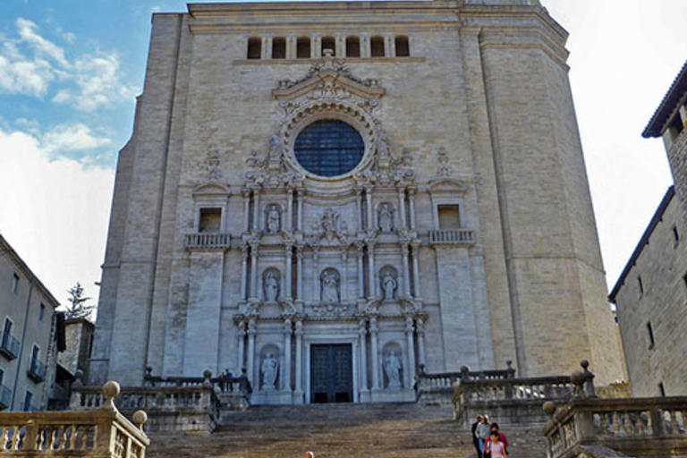

Visita · Girona
A l'indret més genuí de la Força Vella s'hi troba la Catedral. Aixecada entre els segles XI i XVIII, es configura a partir d'un conjunt de murs i espais d'estils diferents, des del romànic…